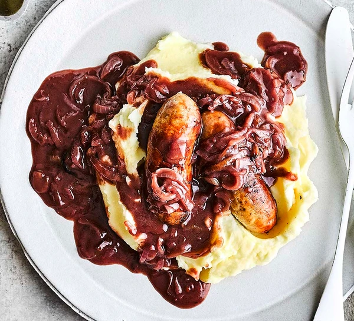

Home

Make sausages and mash with love and you're in for a real treat. We've perfected this recipe to make it the very best it can be
- 1 tbsp sunflower oil
- 8 pork sausages (the best quality you can find)
- small knob of butter
- 3 small onions, finely sliced
- 1 thyme sprig
- 1 bay leaf
- pinch of sugar
- 1 heaped tsp plain flour
- 1 tbsp red wine vinegar
- 1 glass red wine
- 1 tsp soy sauce
- 400ml beef stock made with 1 stock shot or cube
- 1 kg King Edward potatoes, peeled and cut into large chunks
- 100ml whole milk or 50ml milk and 50ml cream
- 50g cold butter, diced
- grating of nutmeg
- Heat the oven to 200C/180C fan/gas 6. Heat the oil in an ovenproof frying pan and gently sizzle the sausages over a medium-high heat for 8-10 mins, turning them, until browned on all sides. Transfer to a plate, then put the butter in the pan and heat until sizzling. Scatter in the onions, stirring them into the butter, then add the thyme sprig, bay and sugar. Give everything a final stir, then put the sausages on top and drizzle over any juices from the plate. Roast everything for 20 mins, turning the sausages halfway through.
- Meanwhile, make the mash. Tip the potatoes into a pan of cold salted water and bring to the boil, then turn down and simmer for 10-12 mins or until just cooked all the way through (the tip of a knife should slide in easily). Drain in a colander and leave for a minute. Tip the milk into the pan and bring to a simmer, then pass the potatoes through a ricer into the hot milk and mash thoroughly. Once mashed, beat with a wooden spoon or spatula over very low heat, then beat in the butter a few bits at a time. You should have extra-fluffy, smooth mash. Keep it warm.
- When the sausages are cooked, remove from the oven, turn the oven off and lift the sausages onto a tray. Return them to the oven to keep warm. Put the pan back on the heat and give the roasted onions a stir, they should be sticky and slightly burnt around the edges. Sizzle for a minute or two more to caramelise, then stir in the flour and cook for another minute. Splash in the vinegar, simmer for a minute, then pour over the red wine and soy, and bubble down to a gloopy paste. Pour over the stock and boil for 3-4 mins, or until you have a rich gravy. If you prefer, scoop out the thyme and bay, or just leave it in. Tip into a bowl or gravy jug with a serving spoon for the onions. Bring everything to the table and scoop a big mound of mash onto the middle of each plate, then top with the sausages and gravy.